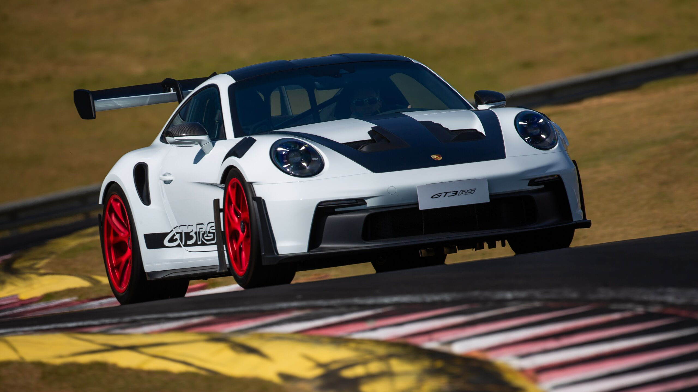

PORSCHE
Esse site é dedicado a renomada marca de automóveis Porsche, oferecendo uma visão abrangente sobre seus modelos inovadores.A PORSCHE é uma icônica fabricante de automóveis de luxo e desempenho, fundada em 1931 por Ferdinand Porsche.Com sede em Stuttgart,Alemanha, a marca é reconhecida mundialmente por sua engenharia de alta performance e design distintivo.O modelo 911, introduzido em 1964, é um dos veículos mais celebrados da história e exemplifica o compromisso da PORSCHE com a performance e a estética de seus veículos.

A Porsche é conhecida por suas inovações técnológicas,com alto desempenho de corrida.

A marca é reconhecida pelo design atemporal e pela engenharia de precisão.
Seus carros combinam luxo,desempenho e comforto.

Essa marca tem uma longa e bem sucedida história automobilística,incluindo vitórias em corridas e participações em diversas categorias.

A empresa PORSCHE está investindo em técnologias sustentáveis e veículos elétricos,alinhando-se as tendencias modernas e as exigencias ambientais.